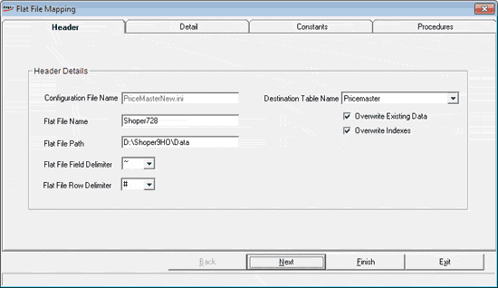

The Flat File Mapping window has four tabs Header, Detail, Constants and Procedures. The Header tab is as shown.

Configuration File Name: The file name entered/ selected in the Data Import Configuration window is displayed.
Flat File Name: Enter a name/ modify the existing name of the flat file from which data is to be imported. Multiple file names can be specified using wild card characters.
Flat File Path: Enter a location/ modify the existing location where the flat files are stored. A network path can be given.
Flat File Field Delimiter: Select/ change the character used as field separator in the flat file.
Flat File Row Delimiter: Select/ change the character used as row separator in the flat file.
Destination Table Name: Select the name of the table to which data is to be imported.
Overwrite Existing Data: Select to replace the data in the destination table with the values you are going to import.
Overwrite Indexes: Select to update the existing indexes defined for the destination table and insert new records, if present as part of import.